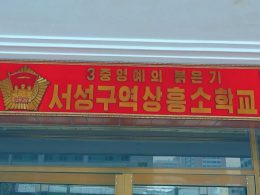

기관소개
기사건수: 88

교육과 과학연구, 생산의 일체화가 실현된 종합대학 첨단기술개발원
2025.12.24.
23

마음도 지향도 하나가 되여
3중영예의 붉은기 중구역 창전소학교의 일군들과 교원들은 마음도 지향도 하나가 되여 학교에 깃든 절세위인들의 불멸의 령도업적을 길이 빛내이기 위한 사업에 박차를 가해오면서 교육의 질을 높이기 위한 사업, 교육조건과 환경을 개선하기 위한 사업을 비롯하여 학교사업의 모든 면에서 커다란 성과를 이룩하고있다.
...
2025.11.21.
10

연구형교수방법창조의 불길을 세차게 일으키고있는 최희숙함흥교원대학
최희숙함흥교원대학에서 나라의 인재육성에 이바지할 교원적격자들을 더 많이 양성하는 원종장으로서의 본분을 다하기 위하여 적극 노력하고있다.
...
2025.09.22.
14

동영상편집물 《과외체육활동의 경험》
동영상편집물 《과외체육활동의 경험》
...
2025.09.08.
42
당의 교육중시정책이 현실로 꽃펴난 북변의 교원양성기지 김정숙교원대학
교육강국건설을 목표로 한 우리 당 교육중시정책의 자랑찬 결과물로 사회주의조선의 북변땅에 일떠선 후대교육의 원종장 김정숙교원대학.
...
2025.08.26.
16